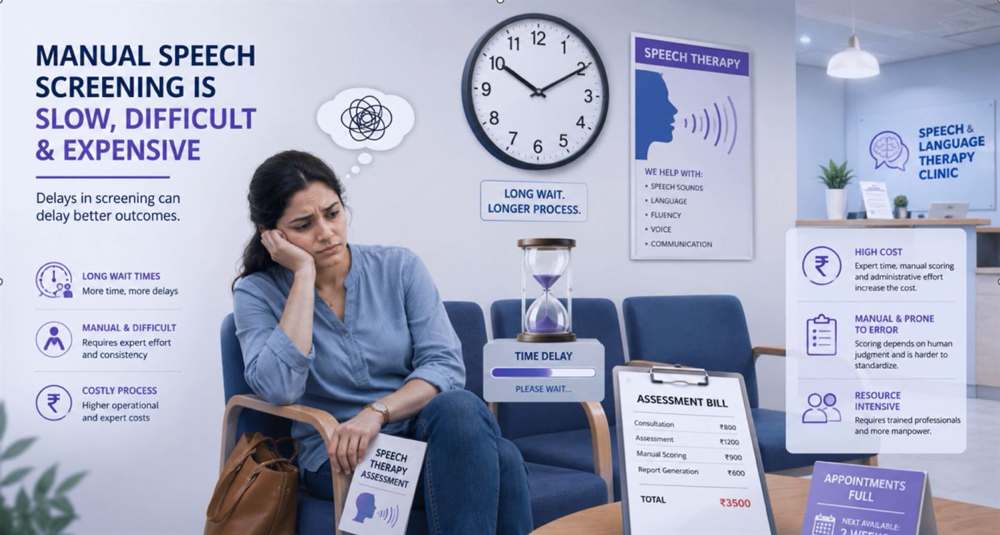
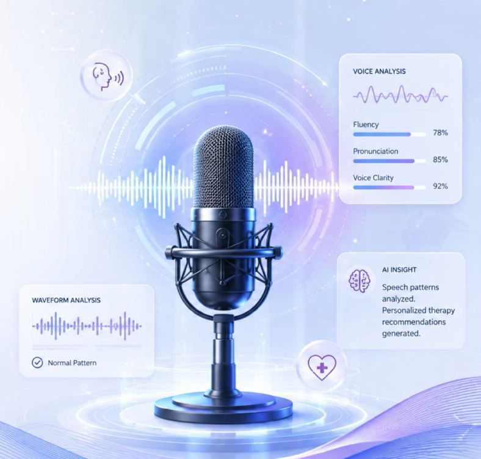
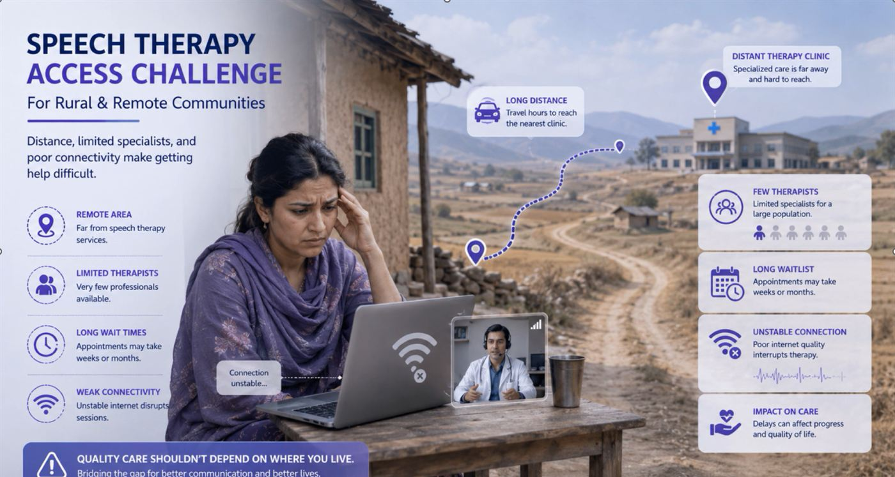
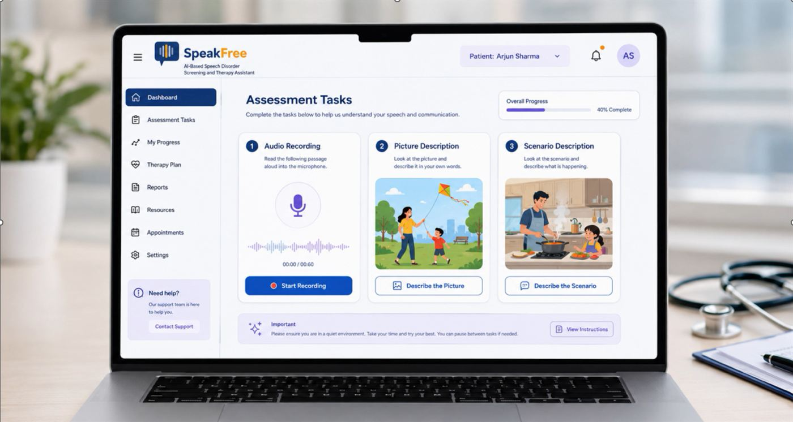
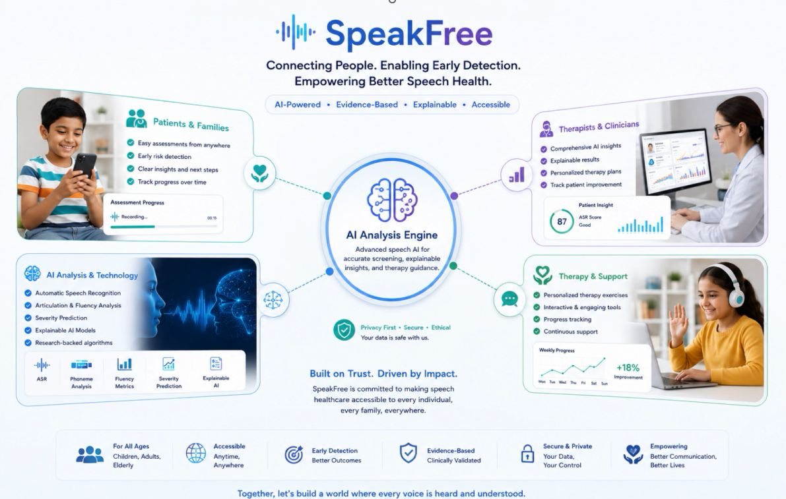

Slow, manual and expensive
Long wait times, manual scoring that depends on individual judgement, and high expert and administrative costs delay the start of therapy.
AI Based Speech Disorder Screening and Therapy Assistant
An online platform that screens speech from a simple browser recording, explains what it finds at the phoneme level, predicts severity and guides personalised home therapy, so quality speech care does not depend on where you live.

Speech disorders are best treated early, yet the path to a diagnosis is long, expensive and often out of reach. Standard speech recognition also performs poorly on disordered speech, so most digital tools cannot fill the gap.

Long wait times, manual scoring that depends on individual judgement, and high expert and administrative costs delay the start of therapy.

Distance, very few specialists for a large population, long waitlists and weak connectivity make consistent therapy difficult in rural and remote communities.

Subtle sound substitutions, cluster simplification, vowel distortion and irregular intonation can be overlooked in a short manual observation.
SpeakFree asks the speaker to complete three short tasks in the browser. Using more than one elicitation task gives a fairer picture of speakers whose fluency varies across contexts.
The recordings flow through the four research components, and the results come back as structured, explainable scores with clear next steps for families and clinicians.

Each member owns one sub problem. Components are built and tested independently against a shared JSON contract, then integrated end to end.

Browser based recording, noise reduction and confidence aware ASR (Whisper, HuBERT, Librosa) that turns raw speech into accuracy, fluency and pronunciation scores.

Forced alignment and phoneme segmentation that time every sound and flag substitutions, distortions and reduced vowels at the phoneme level.

Combines fluency and articulation signals into a Mild, Moderate or Severe prediction with class probabilities, a risk level and decision support.

Adaptive exercise plans, a conversational assistant and progress tracking, with expert recalibration and privacy preserving therapist reports.
